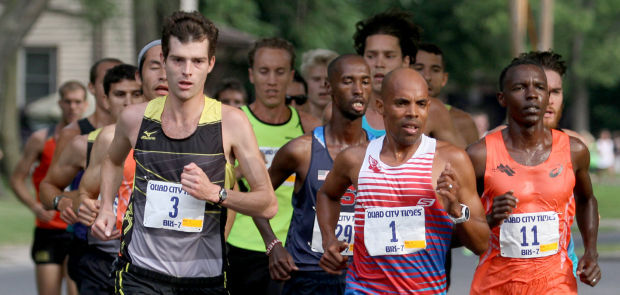

Media Timeline
-
-
New Haven Road Race: Christo Landry one of the favorites
As weird as it sounds, distance runner Christo Landry’s favorite post-race meal is pizza. On Labor Day, the 6-foot-1, 145-pound Landry will have plenty of options to satisfy that craving in a city known for its pizza. Landry is set to take part in the 37th annual Faxon Law New Haven Road Race, which doubles as the 20K national championship. -
-
-

Emerging Landry should be Meb's main competition
One of Christo Landry’s most vivid memories of his only previous visit to the Quad-City Times Bix 7 was the night before the race. He and the other elite runners were hanging out at St. Ambrose University and fellow American Abdi Abdirahman, who was born in Somalia, brought him a heaping plate of ugali, the sticky, heavy porridge that is a staple of the diet of the runners from Kenya. “I thought it was pretty cool that a multi-time Olympian was bringing me a plate of something that the Kenyan runners eat every day,’’ Landry said. -
-

Landry wins Peachtree, 10k national title
Christo Landry gambled in the final mile and won The Atlanta Journal-Constitution Peachtree Road Race to become the U.S. 10K champion Friday. After a fast start, Landry and Tyler Pennel began to break away from the pack of 32 elite runners at mile 5 of the 6.2-mile race. As they began to run uphill in the last 500 yards, Landry made his move. He finished in a time of 28 minutes, 25 seconds, which was five seconds ahead of Pennel. “I figured the easiest way to break away is to make that one hard move,” said Landry, who was draped in a U.S. flag after the race. “If he didn’t make a split-second decision on an uphill, I was going to be able to get a big step on him, and it would be pretty hard to catch me.” -
-